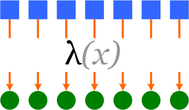

Базы данных: введение, часть девятая
Илья Тетерин
2011-11-16
(use arrow keys or PgUp/PgDown to move slides)
Илья Тетерин
2011-11-16
(use arrow keys or PgUp/PgDown to move slides)
* своими руками
* Google MapReduce
* Hadoop MapReduce
* MongoDB MapReduce
// python
def f(x):
return x * x
l = [1,3,4,8,22]// java
int f(int x) {
return x * x;
}def square(x):
return x*x
vals = [1, 2, 3, 4]
newvals = []
for v in vals:
newvals.append(square(v))
def map(f, s):
result = []
for x in s:
result.append(f(x))
return result
def square(x):
return x*x
vals = [1, 2, 3, 4]
newvals = map(square,vals)
отображение (map) - делаем новый список, элементы которого получены применением функции к элементам исходного списка
фильтрация (filter) — каждый элемент списка проверяется на соответствие функции-предикату, и если элемент не соответствует, он выбрасывается из списка

свертка (reduce / fold) - "сворачиваем" множество значений в одно, комбинируя последовательно элементы множества

Требуются:
Множество элементов: что мы будем "сворачивать"
Начальный (пустой) элемент (unit): 1 - умножение, 0 - сложение, пустая строка - склеивание строк етс.
функция двух параметров - комбинатор:
v0 = combinator (unit, element);
далее vi = combinator(Vprev, element);
interface Filter<T> { boolean fits(T t); }
interface Function<X, Y> { Y apply(X arg); }
interface BiFunction<X, Y, Z> { Z apply(X x, Y y); }
public static <X, Y> List<Y> map(List<X> items, Function<X, Y> fu) {
final List<Y> out = new ArrayList<Y>(items.size());
for (final X item : items)
out.add(fu.apply(item));
return out;
}
public static <X> List<X> filter(List<X> items, Filter<X> fi) {
final List<X> out = new ArrayList<X>();
for (final X item : items)
if (fi.fits(item))
out.add(item);
return out;
}
public static <U, X> U reduce(List<X> items, BiFunction<U, X, U> fu, U unit) {
U out = unit;
for (final X item : items)
out = fu.apply(out, item);
return out;
}
final static Function<Integer, Integer> square = new Function<Integer, Integer>() {
public Integer apply(final Integer arg) {
return arg * arg;
}
};
final static Filter<Integer> evenFilter = new Filter<Integer>() {
public boolean fits(final Integer integer) {
return integer % 2 == 0;
}
};
final List<Integer> list = new ArrayList<Integer>();
for(int i = 0; i < 50; i++)
list.add(i);
final List<Integer> squaresOfEvens = map(filter(list, evenFilter), square);
или
final List<Integer> evens = filter(list, evenFilter);
final List<Integer> squaresOfEvens = map(evens, square);
или
final List<Integer> squares = new ArrayList<Integer>();
for (final Integer integer : list) {
if (integer % 2 == 0) {
squares.add(integer); // ой!!! забыл в квадрат возвести
}}
Готовые библиотеки:
LambdaJ is a library that makes easier to to manipulate collections in a pseudo-functional and statically typed way.
Guava-libraries contains several of Google's core libraries that we rely on in our Java-based projects: collections, caching, primitives support, concurrency libraries, common annotations, string processing, I/O, and so forth.
Детали map / reduce реализации отдельны и скрыты от разработчика...
... и могут оптимизироваться отдельно ...
Многопоточность?
Распределенность?
final static int threads = 50;
public static <X, Y> List<Y> mapParallel(
final List<X> items, final Function<X, Y> fu)
throws InterruptedException, ExecutionException {
// нарежем на кусочки по количеству тредов
final int chunkSize = items.size() % threads;
final List<List<X>> chunks = split(items, chunkSize);
// подготовим исполнение в threads потоков
final ExecutorService executorService = Executors.newFixedThreadPool(threads);
final Function<List<X>, Callable<List<Y>>> toCallable
= new Function<List<X>, Callable<List<Y>>>() {
public Callable<List<Y>> apply(final List<X> arg) {
return new Callable<List<Y>>() {
public List<Y> call() throws Exception {
return map(arg, fu); // исполнение через простую map
} }; } };
// сконвертиуем кусочки и отправим на вычисление
final List<Future<List<Y>>> futures = executorService
.invokeAll(map(chunks, toCallable)); // отправим на исполнение
executorService.shutdown(); // выключим многотредность
final List<Y> out = new ArrayList<Y>(items.size());
for (final Future<List<Y>> item : futures) // соберем результаты
out.addAll(item.get()); // Future.get подождет, если результат еще не готов
return out;
}
... реализация же скрыта от разработчика, да? ...
final static int MAP_MAX_IN_SINGLE_THREAD = 500;
final static int MAP_MIN_CHUNK_PER_THREAD = 100;
public static <X, Y> List<Y> map(List<X> items, Function<X, Y> fu) {
if (items.size() > MAP_MAX_IN_SINGLE_THREAD &&
items.size() > MAP_MIN_CHUNK_PER_THREAD)
return mapParallel(items, fu);
final List<Y> out = new ArrayList<Y>(items.size());
for (final X item : items)
out.add(fu.apply(item));
return out;
}
Мы сделали (и спрятали от разработчика) многопоточное исполнение вычисления ...
... отладили и проверили ...
... автоматом встроили в кучу мест, где уже используется...
... автоматически включающееся от размер коллекции.
Кто хочет поискать по всему коду циклы for и встроить по тем местам многопоточность?
Разделение кода
Это позволяет кодировать разным людям разные части системы ... и оптимизировать код по частям.
Кому-то интересно возиться с библиотеками, кому-то интересно писать код и получать результаты от бизнес-части
В 2004-ом году Google публикует статью MapReduce: Simplified Data Processing on Large Clusters by Jeffrey Dean и Sanjay Ghemawat (pdf / slides).
Рассматривается вычислительная модель MapReduce и внутренняя реализация, распараллеливающая вычисление в кластера большого размера.
Малоопытные разработчики могут писать задачи для кластера ... на тысячи машин.
Наборы ключ-значение (строка - строка)
map (in_key, in_value) -> list(out_key, intermediate_value)
и
reduce (out_key, list(intermediate_value)) -> list(out_value)
map(String input_key, String input_value):
// input_key: document name
// input_value: document contents
for each word w in input_value:
EmitIntermediate(w, "1");
reduce(String output_key, Iterator intermediate_values):
// output_key: a word
// output_values: a list of counts
int result = 0;
for each v in intermediate_values:
result += ParseInt(v);
Emit(AsString(result));
Pseudocode: See appendix in paper for real code
Facebook, Amazon, Adobe, AOL, Baidu, EBay (532 node, 8*532 core, 5.3Pb), Google - для студентов, IBM, Last.fm, LinkedIn, Yahoo (100 000+ cores, 40 000+ nodes) ...
Amazon предлагает облако Hadoop машин - Amazon Elastic MapReduce ... с ценами от $0.015 (45 копеек) за час машинного времени.
Production Deployments: Disney, GitHub, FourSquare, SourceForge, etc...
$ brew update $ brew install mongodb ... mongod run --config /usr/local/Cellar/mongodb/2.0.1-x86_64/mongod.conf
1 # Store data in /usr/local/var/mongodb instead of the default /data/db 2 dbpath = /usr/local/var/mongodb 3 4 # Only accept local connections 5 bind_ip = 127.0.0.1
pulser-osx:~ pulser$ mongo MongoDB shell version: 2.0.1 connecting to: test > show dbs admin (empty) csc 0.203125GB local (empty) > use csc switched to db csc > db.student.count() 41
Пишем скрипт на javascript ... и кидаем через command-line
1 t = db.student;
2 t.drop();
3
4 t.save({name:"Аганезов Сергей",department:"UN",vuz:"ИТМО"})
5 t.save({name:"Альперович Семен",department:"SE",vuz:"СПбГПУ"})
48 var m = function () {
49 emit(this.vuz, {fio:this.name});
50 };
51
52 var r = function (key, values) {
53 var sum = 0;
54 var fu = function (doc) { sum = sum + 1; };
55 values.forEach(fu);
56 return {vuz:key, count:sum};
57 };
58
59 var op = db.student.mapReduce(m, r, {out:"mr_result"});
60 var done = db.mr_result.find("this.value.count > 0");
61
62 done.forEach(printjson);
pulser-osx:tmp pulser$ mongo csc insert.js
MongoDB shell version: 2.0.1
connecting to: csc
{ "_id" : "ГУАП", "value" : { "vuz" : "ГУАП", "count" : 2 } }
{ "_id" : "ИТМО", "value" : { "vuz" : "ИТМО", "count" : 20 } }
{ "_id" : "СПбГПУ", "value" : { "vuz" : "СПбГПУ", "count" : 9 } }
{ "_id" : "СПбГУ", "value" : { "vuz" : "СПбГУ", "count" : 6 } }
Литература: